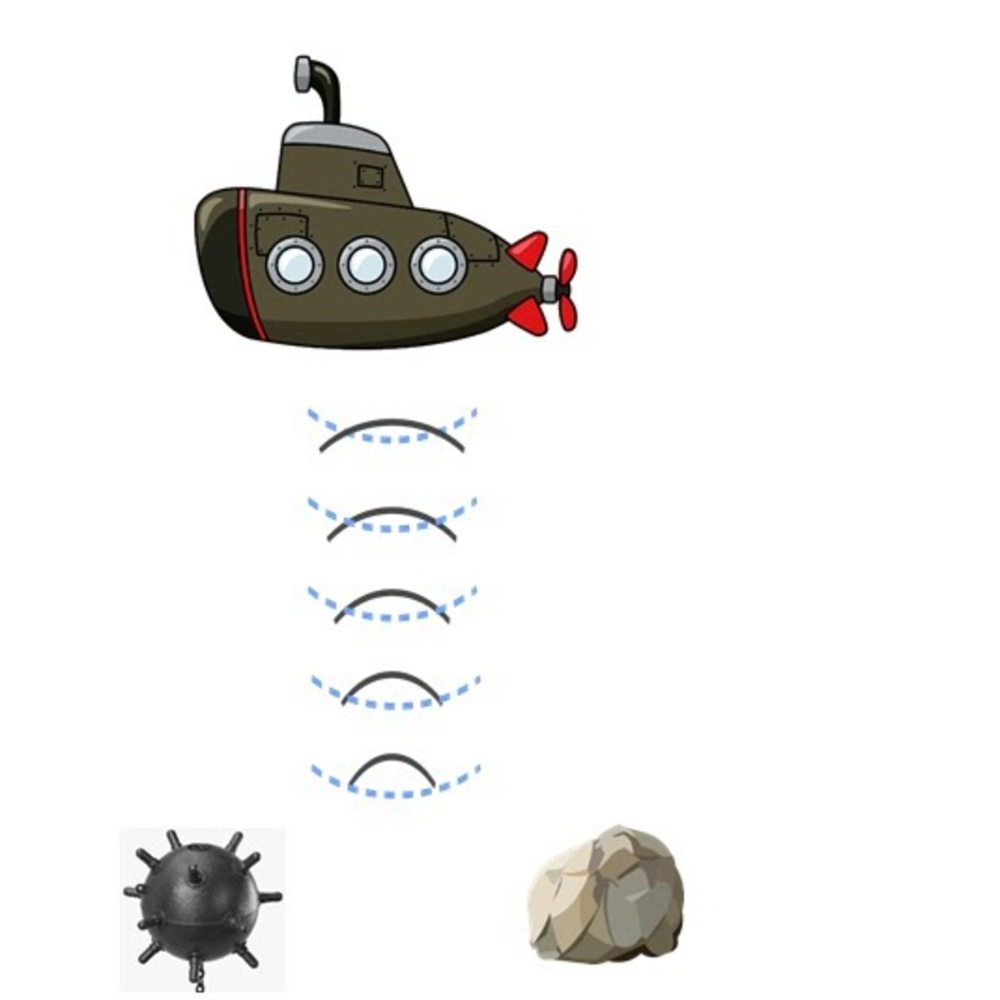

Portfolio Manuel Mongelós
Titanic
Exploración de los datos y modelado utilizando Rapidminer para el dataset de Titanic, tratando de predecir sobrevivientes.
Ver más

Feature selection
Utilizando el dataset Sonar se intenta ver la diferencia entre el empleo de una backward elimination y forward elimination, mostrando su implementación y haciendo una comparativa final de sus resultados.
Ver más
Boston housing
Exploración y modelado del dataset de Boston housing, y comparación de regresión lineal con XGBoost + Optuna (Parameter optimization).
Ver mas